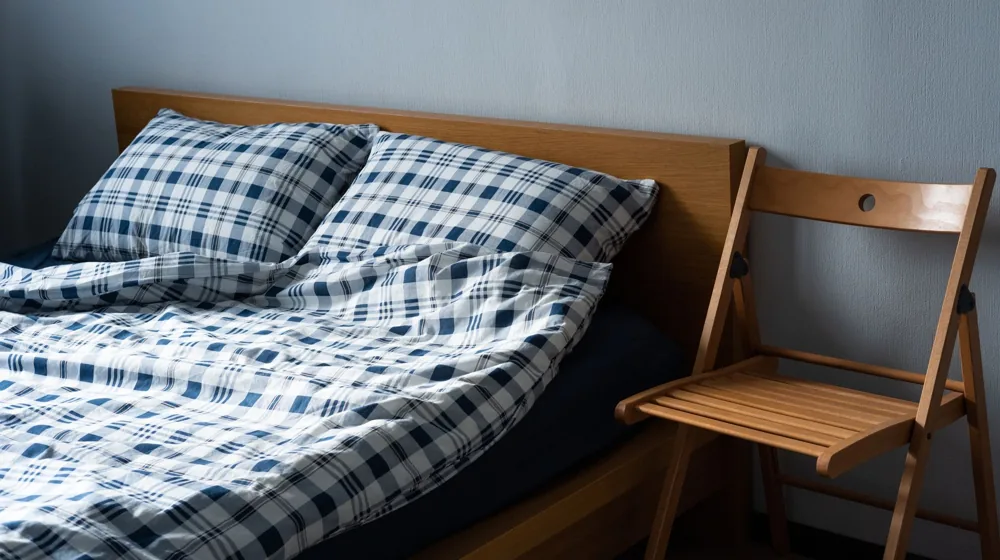

수면의 질 높이는 습관 4가지, 오늘 밤 바로 실천하는 꿀잠 가이드
사진: Ron Lach / Pexels (무료 이미지, 출처 표기)
자도 자도 피곤한 당신, 수면의 질이 범인입니다

매일 아침 일어날 때마다 몸이 찌푸둥하고 개운하지 않으신가요? 충분한 시간 동안 누워 있었는데도 피로가 풀리지 않는다면 수면의 양보다 '수면의 질'이 떨어졌을 가능성이 큽니다. 대한수면의학회에 따르면 현대인의 약 30%가 일시적이거나 만성적인 수면 불편감을 호소하고 있습니다.
수면은 단순히 쉬는 시간이 아니라 뇌와 신체가 세포를 재생하고 기억을 정리하는 필수적인 과정입니다. 거창한 치료나 고가의 장비 없이도 생활 속 작은 습관들을 교정하는 것만으로 수면의 깊이를 획기적으로 바꿀 수 있습니다. 오늘 밤부터 당장 실천해 볼 수 있는 구체적인 가이드를 정리해 드립니다.
1. 숙면을 부르는 최적의 침실 환경 조성법
수면 환경은 뇌가 잠을 인식하는 가장 직접적인 신호입니다. 수면의 질을 결정하는 핵심 요소인 온도, 습도, 조도를 완벽하게 통제하는 것부터 시작해 보세요.
- 온도와 습도 조절: 가장 이상적인 침실 온도는 18~22℃이며, 습도는 50~60%를 유지하는 것이 좋습니다. 몸이 너무 덥거나 추우면 깊은 잠을 뜻하는 '논렘(Non-REM) 수면' 단계로 진입하기 어렵습니다.
- 철저한 빛 차단: 암막 커튼을 활용해 창문으로 들어오는 미세한 가로등 빛까지 차단하세요. 아주 약한 빛이라도 망막을 자극하면 밤에 분비되어야 할 수면 유도 호르몬인 멜라토닌의 생성이 억제됩니다.
- 적절한 침구 선택: 목의 C자 곡선을 지탱해 주는 기능성 베개를 사용하면 기도가 열려 호흡이 편안해지고 뒤척임이 줄어듭니다.
2. 생체 리듬을 바꾸는 저녁 습관 3가지
잠자리에 들기 전 3시간을 어떻게 보내느냐가 그날 밤의 수면 깊이를 좌우합니다. 뇌를 서서히 이완시키는 저녁 루틴을 만들어 보세요.
첫째, 카페인 컷오프(Cut-off) 시간 설정입니다. 카페인의 반감기(체내 농도가 절반으로 줄어드는 시간)는 대략 5~6시간입니다. 따라서 오후 2시 이후로는 커피, 에너지 음료, 녹차 등의 섭취를 중단해야 밤에 뇌가 완전히 휴식 모드로 들어갈 수 있습니다.
둘째, 취침 1시간 전 스마트폰 멀리하기입니다. 스마트폰 화면에서 나오는 블루라이트(청색광)는 뇌가 아직 '낮'이라고 착각하게 만듭니다. 최소 취침 1시간 전에는 기기 사용을 멈추고 따뜻한 색감의 간접 조명을 켜 두는 것이 좋습니다.
셋째, 미온수 샤워입니다. 잠들기 1~2시간 전에 미지근한 물로 샤워를 하면 인위적으로 올라갔던 체온이 서서히 떨어지면서 자연스러운 졸음을 유도합니다. 너무 뜨거운 물은 오히려 교감신경을 자극하므로 피해야 합니다.
3. 수면 단계와 내 잠의 질 비교하기
우리가 자는 동안 뇌는 일정한 수면 주기를 반복합니다. 피로 회복과 직접적인 연관이 있는 수면 단계를 비교해 보면 내 수면에 어떤 문제가 있는지 파악하는 데 도움이 됩니다.
만약 아침에 일어났을 때 근육이 뻐근하거나 몽롱하다면 육체 회복을 돕는 '깊은 수면(N3)' 단계가 부족한 상태일 확률이 높습니다. 평소 수면 효율을 높이는 환경을 점검해야 하는 이유입니다.
4. 의외로 자주 하는 숙면 방해 행위와 주의사항
좋은 습관을 더하는 것보다 나쁜 행동을 빼는 것이 훨씬 효과적일 수 있습니다. 우리가 무심코 저지르는 숙면 방해 행동들을 피해 보세요.
가장 흔한 실수는 잠자기 전 술 한 잔입니다. 알코올은 일시적으로 긴장을 풀어주어 잠에 빨리 들게 하지만, 체내에서 분해되는 과정에서 갈증을 유발하고 심박수를 올려 결국 새벽에 자주 깨게 만듭니다. 결과적으로 전체적인 수면의 질은 현저히 떨어집니다.
또한, 야간의 격렬한 고강도 운동도 피해야 합니다. 밤늦게 땀을 흘리며 운동하면 체온이 상승하고 교감신경이 극도로 활성화되어 최소 3~4시간 동안은 뇌가 각성 상태를 유지하게 됩니다. 운동은 늦어도 취침 3시간 전에는 마치는 것이 바람직합니다.
5. 오늘 바로 시작하는 수면 개선 체크리스트
잠은 몰아서 자는 것보다 규칙적인 생체 리듬을 유지하는 것이 핵심입니다. 아래 체크리스트를 바탕으로 나만의 수면 루틴을 꾸준히 실천해 보세요.
- [ ] 매일 아침 일정한 시간에 기상하고 햇볕 쬐기
- [ ] 오후 2시 이후로는 디카페인 음료만 마시기
- [ ] 침실 온도를 20도 안팎으로 서늘하게 맞추기
- [ ] 취침 1시간 전부터는 스마트폰을 거실에 두고 자러 가기
- [ ] 저녁 식사는 취침 3시간 전에 가볍게 마무리하기
습관을 바꾼 뒤 일정한 수면 리듬을 되찾기까지는 보통 2주 정도의 시간이 걸립니다. 만약 이러한 생활 습관 개선 노력에도 불구하고 심한 불면증이나 주간 졸림증이 3주 이상 이어진다면, 수면클리닉 등의 의료기관을 방문하여 전문적인 상담을 받아보시기를 권장합니다.
🔗 이 글도 함께 보면 좋아요: 상한 머리 자르지 마세요: 일상에서 실천하는 4가지 모발 복구 습관
관련 추천 상품
이 포스팅은 쿠팡 파트너스 활동의 일환으로, 이에 따른 일정액의 수수료를 제공받습니다.